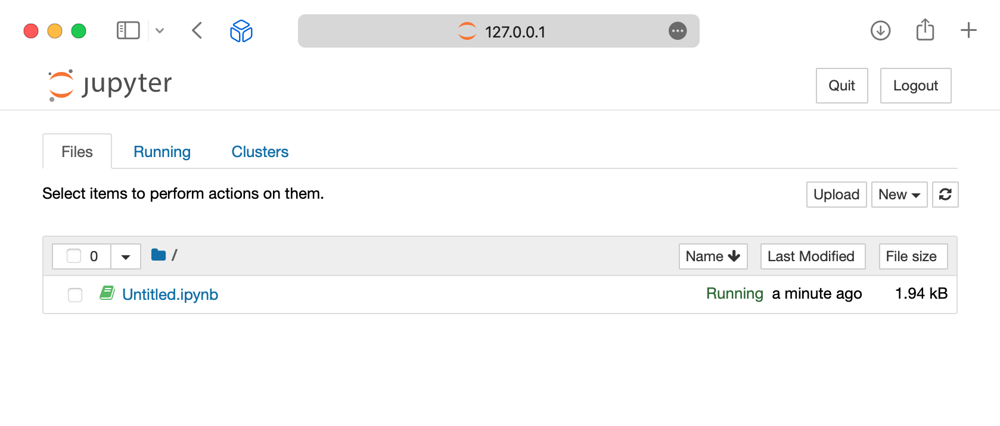
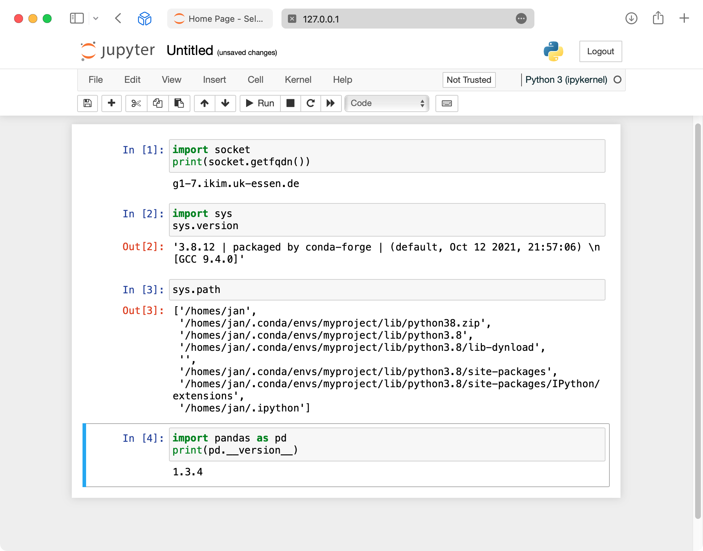

Jupyter Notebook Workflow
The Jupyter Notebook is an open-source web application that allows creating and sharing documents that contain live code, equations, visualizations and narrative text. Uses include: data cleaning and transformation, numerical simulation, statistical modeling, data visualization, machine learning, and much more. Visit Jupyter.org for more information.
Starting a Jupyter server instance
To launch a Jupyter instance on the Slurm cluster, first log into the Slurm submission node:
ssh slurmq
Next, either create a conda environment with the package notebook from the channel conda-forge or install the package in an existing environment.
conda create -n myproject -c conda-forge notebook
conda activate myproject
The Jupyter startup command must be submitted to Slurm using srun or sbatch. Here is a minimal example which launches the server on a worker node with 32 allocated CPU cores and an 8-hour deadline:
srun --time 08:00:00 --cpus-per-task=32 jupyter notebook --ip 0.0.0.0 --no-browser
The hostname, port number and authorization token are displayed upon startup. For example:
[I 06:30:19.290 NotebookApp] Serving notebooks from local directory: /homes/jan
[I 06:30:19.290 NotebookApp] Jupyter Notebook 6.4.5 is running at:
[I 06:30:19.290 NotebookApp] http://g1-7.ikim.uk-essen.de:8888/ ?token=d6e1289f41b1433b557c06dd78c9d716180dc2a8ea61e8a9
[I 06:30:19.290 NotebookApp] or http://127.0.0.1:8888/ ?token=d6e1289f41b1433b557c06dd78c9d716180dc2a8ea61e8a9
[I 06:30:19.290 NotebookApp] Use Control-C to stop this server and shut down all kernels (twice to skip confirmation).
[C 06:30:19.296 NotebookApp]
To access the notebook, open this file in a browser:
file:///homes/jan/.local/share/jupyter/runtime/nbserver-426528-open.html
Or copy and paste one of these URLs:
http://g1-7.ikim.uk-essen.de:8888/?token=d6e1289f41b1433b557c06dd78c9d716180dc2a8ea61e8a9
or http://127.0.0.1:8888/?token=d6e1289f41b1433b557c06dd78c9d716180dc2a8ea61e8a9
The output above contains the following information:
- The hostname of the worker node:
g1-7. - The port number:
8888. - The authorization token:
d6e1289f41b1433b557c06dd78c9d716180dc2a8ea61e8a9.
Connecting to the remote Jupyter server
From a browser on the local machine
Worker nodes in the cluster are not exposed to the internet. In order to reach a cluster node from a local browser, an SSH tunnel through the login node must be launched. Open a terminal and execute the following command, replacing the hostname and port number from the example with the actual values:
ssh -N -L 8888:g1-7:8888 ikim
This command creates an SSH tunnel such that all traffic to localhost:8888 passes through the host ikim and reaches the destination g1-7:8888. The terminal will simply hang, indicating that the tunnel has been created.
Open a browser and paste the URL provided by Jupyter. Since the traffic needs to flow through the tunnel, replace the target host with localhost:
http://localhost:8888/?token=d6e1289f41b1433b557c06dd78c9d716180dc2a8ea61e8a9
The Jupyter landing page should appear:

To verify that the notebook is running on the remote host and within the conda environment:

From Visual Studio Code
Connect to the Slurm submission node as described in Connect to a remote host. When prompted for the target host, type slurmq.
From the submission node, connect to the Jupyter server as described in Connect to a remote Jupyter server. When prompted for the URL, simply copy and paste the URL displayed in the output from jupyter notebook. As opposed to the browser method, in this case the connection originates from inside the cluster and there's no need to set up port forwarding.